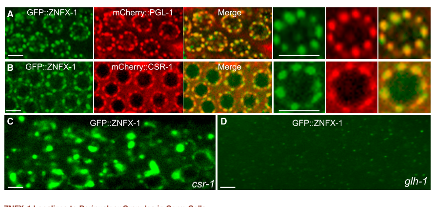
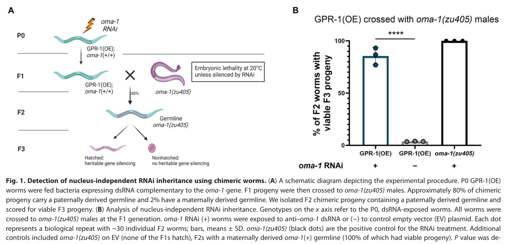

ZNFX-1 is a conserved NFX1-type zinc finger-containing RNA helicase that is the defining component of Z granules, a class of liquid-like condensates distinct from P granules. ZNFX-1 functions as a dedicated transgenerational RNAi inheritance factor, required for transmitting small RNA-mediated gene silencing signals across generations. The protein localizes to perinuclear nuage where it interacts with Argonaute proteins (WAGO-4, CSR-1, WAGO-1, PRG-1) and the RNA-dependent RNA polymerase EGO-1. ZNFX-1 and WAGO-4 co-localize in P granules during early germline development, then segregate to form Z granules during oocyte maturation. In adult germ cells, P granules, Z granules, and Mutator foci assemble into ordered tri-condensate "PZM" assemblages. ZNFX-1's helicase activity is essential for balancing epigenetic signals by preventing the spread of small RNA targeting toward the 5'-end of mRNAs, thereby maintaining stable transgenerational silencing.
| GO Term | Evidence | Action | Reason |
|---|---|---|---|
|
GO:0003723
RNA binding
|
IBA
GO_REF:0000033 |
ACCEPT |
Summary: ZNFX-1 contains NF-X1 type zinc finger domains and functions within RNA/protein granules (Z granules). The protein interacts with Argonaute proteins (CSR-1, WAGO-1, WAGO-4, PRG-1) and the RdRP EGO-1, all of which are RNA-binding proteins involved in small RNA pathways [PMID:29775580, PMID:29769721]. RNA binding is consistent with its role in RNA helicase activity and small RNA-mediated gene silencing.
Reason: RNA binding is a core function supported by multiple lines of evidence: the protein contains NFX1-type zinc finger domains (4 copies), localizes to RNA/protein granules, and functions in small RNA pathways. IBA phylogenetic inference is appropriate given conservation across species. Falcon deep research adds that ZNFX-1 binds small-RNA-targeted transcripts bearing poly(UG) tails and physically associates with the RdRP EGO-1 and Argonautes CSR-1, WAGO-1 and PRG-1.
Supporting Evidence:
PMID:29775580
we identify the deeply conserved helicase-domain protein, ZNFX-1, as an epigenetic regulator and component of nuage that interacts with Argonaute systems to balance epigenetic inheritance
PMID:29769721
ZNFX-1 is a conserved RNA helicase, which marks RNAs produced from genes undergoing heritable silencing
file:worm/znfx-1/znfx-1-deep-research-falcon.md
ZNFX-1 interacts with small-RNA-targeted transcripts that acquire **poly(UG) (pUG) tails**, and it is required to maintain pUGylation and concentrate targeted mature RNAs in perinuclear condensates
|
|
GO:0031048
regulatory ncRNA-mediated heterochromatin formation
|
IBA
GO_REF:0000033 |
MODIFY |
Summary: This annotation is inferred from S. pombe ortholog hrr1 (SPCC1739.03). While ZNFX-1 is involved in regulatory ncRNA-mediated gene silencing, its primary function in C. elegans appears to be cytoplasmic post-transcriptional silencing rather than heterochromatin formation. The key role of ZNFX-1 is transgenerational siRNA inheritance via cytoplasmic Z granules, not nuclear heterochromatin assembly.
Reason: While the S. pombe ortholog hrr1 functions in heterochromatin formation,
C. elegans ZNFX-1 functions primarily in cytoplasmic transgenerational RNAi
inheritance. The term is too specific to the nuclear heterochromatin pathway.
A more appropriate term would reflect its role in siRNA-mediated gene silencing.
Falcon deep research reinforces this: ZNFX-1 acts in a cytoplasmic/perinuclear
amplification loop operating in parallel to nuclear HRDE-1, where HRDE-1 targets
nascent transcripts while ZNFX-1 targets mature transcripts in nuage; znfx-1
mutants are specifically defective in cytoplasm-only inheritance (viability ~6.87%
vs ~85% in controls).
Proposed replacements:
siRNA-mediated post-transcriptional gene silencing
regulatory ncRNA-mediated gene silencing
Supporting Evidence:
PMID:29769721
The data establish that ZNFX-1 is a dedicated RNAi inheritance factor
UniProt:E9P860
Epigenetic inheritance factor which, in association with the Argonaute protein wago-4, mediates small RNA-directed transgenerational epigenetic inheritance
file:worm/znfx-1/znfx-1-deep-research-falcon.md
HRDE-1 targets nascent transcripts, while ZNFX-1 targets **mature transcripts** in nuage, maintains **pUGylated RNAs**, and promotes robust tertiary 22G-RNA amplification in inheriting generations.
|
|
GO:0031380
nuclear RNA-directed RNA polymerase complex
|
IBA
GO_REF:0000033 |
REMOVE |
Summary: This annotation is inferred from S. pombe ortholog hrr1. However, in C. elegans, ZNFX-1 does not localize to the nucleus but rather to cytoplasmic perinuclear granules (Z granules). While ZNFX-1 interacts with the RdRP EGO-1, this interaction occurs in cytoplasmic nuage, not in a nuclear complex. The primary localization of ZNFX-1 is to Z granules adjacent to P granules in the perinuclear region.
Reason: UniProt explicitly states ZNFX-1 localizes to "Cytoplasm, perinuclear region" and "Cytoplasmic granule" (Z granules). There is no evidence for nuclear localization in C. elegans. The S. pombe ortholog hrr1 has a distinct nuclear function that does not apply to the C. elegans protein.
Supporting Evidence:
PMID:29769721
Later in germline development, ZNFX-1 and WAGO-4 separate from P granules to define an independent liquid-like condensate that we term the Z granule
PMID:29775580
we identify the deeply conserved helicase-domain protein, ZNFX-1, as an epigenetic regulator and component of nuage
|
|
GO:0000166
nucleotide binding
|
IEA
GO_REF:0000043 |
ACCEPT |
Summary: ZNFX-1 contains a UvrD-like helicase ATP-binding domain (residues 1040-1545) and has been assigned EC 3.6.4.13 (RNA helicase) activity. The protein has a characterized ATP binding site (residues 1061-1068). Nucleotide binding is consistent with its helicase function.
Reason: This is a parent term of ATP binding (GO:0005524) which is directly supported by the domain architecture. While less specific, it is not incorrect. The IEA annotation from UniProt keyword mapping is valid.
Supporting Evidence:
UniProt:E9P860
Alternative splicing; ATP-binding; Cytoplasm; Helicase; Hydrolase
|
|
GO:0003723
RNA binding
|
IEA
GO_REF:0000043 |
ACCEPT |
Summary: Duplicate of the IBA annotation. ZNFX-1 contains NFX1-type zinc finger domains and functions in RNA/protein granules involved in small RNA pathways. RNA binding is consistent with its role as an RNA helicase.
Reason: While this duplicates the IBA annotation, both are valid. The IEA annotation from UniProt keyword mapping independently supports RNA binding based on domain content.
Supporting Evidence:
PMID:29775580
we identify the deeply conserved helicase-domain protein, ZNFX-1, as an epigenetic regulator and component of nuage that interacts with Argonaute systems to balance epigenetic inheritance
|
|
GO:0003724
RNA helicase activity
|
IEA
GO_REF:0000003 |
ACCEPT |
Summary: ZNFX-1 is assigned EC 3.6.4.13 (RNA helicase) and contains a UvrD-like helicase ATP-binding domain. Mutagenesis studies show that mutations in the helicase domain (K1067A in Walker A motif, L1530F, Y1562C) disrupt RNA-induced gene silencing, demonstrating the functional importance of helicase activity.
Reason: This is a core molecular function of ZNFX-1. The protein is classified as an RNA helicase (EC 3.6.4.13) and contains the characteristic helicase domain. Mutagenesis of helicase domain residues abolishes function. Falcon deep research confirms ZNFX-1 is a UPF1-like superfamily-1 (SF1) helicase whose helicase core is functionally essential (ATP-binding-site mutant K1067A and helicase-domain deletions cause inheritance defects), acting in small-RNA amplification rather than as a classical metabolic enzyme.
Supporting Evidence:
UniProt:E9P860
EC=3.6.4.13 {ECO:0000305|PubMed:29775580}
PMID:29769721
ZK1067.2 encodes a 2443 amino acid protein that contains a superfamily one (SF1) RNA helicase domain and a Zn finger domain
file:worm/znfx-1/znfx-1-deep-research-falcon.md
**central UPF1-like SF1 helicase domain** and **six cysteine-rich NF-X1-like motifs**
|
|
GO:0004386
helicase activity
|
IEA
GO_REF:0000120 |
ACCEPT |
Summary: This is a parent term of RNA helicase activity (GO:0003724). ZNFX-1 contains InterPro domain IPR041677 (DNA2/NAM7_AAA_11) which supports helicase activity classification.
Reason: Valid parent term of the more specific RNA helicase activity. The annotation is consistent with domain architecture and functional data.
Supporting Evidence:
PMID:29769721
ZK1067.2 encodes a 2443 amino acid protein that contains a superfamily one (SF1) RNA helicase domain and a Zn finger domain
|
|
GO:0005524
ATP binding
|
IEA
GO_REF:0000043 |
ACCEPT |
Summary: ZNFX-1 has a characterized ATP binding site at residues 1061-1068 within the UvrD-like helicase ATP-binding domain. The Walker A motif lysine (K1067) is critical for function, as K1067A mutation causes defective RNA-induced gene silencing.
Reason: ATP binding is a core molecular function supported by domain architecture and validated by mutagenesis.
Supporting Evidence:
UniProt:E9P860
Alternative splicing; ATP-binding; Cytoplasm; Helicase; Hydrolase
UniProt:E9P860
K->A: In ne4382; defective RNA-induced gene silencing
|
|
GO:0005634
nucleus
|
IEA
GO_REF:0000002 |
REMOVE |
Summary: This annotation is based on InterPro domain IPR000967 (NF-X1 zinc finger), which in some family members is associated with nuclear localization. However, experimental evidence in C. elegans shows ZNFX-1 localizes to cytoplasmic perinuclear granules (Z granules), not the nucleus itself.
Reason: Experimental evidence from multiple publications demonstrates cytoplasmic localization to Z granules and perinuclear region, not nuclear localization. UniProt subcellular location explicitly lists "Cytoplasm, perinuclear region" and "Cytoplasmic granule" with no nuclear localization.
Supporting Evidence:
PMID:29769721
Later in germline development, ZNFX-1 and WAGO-4 separate from P granules to define an independent liquid-like condensate that we term the Z granule
UniProt:E9P860
SUBCELLULAR LOCATION: Cytoplasm, perinuclear region
|
|
GO:0005694
chromosome
|
IEA
GO_REF:0000117 |
REMOVE |
Summary: This annotation from ARBA machine learning model (ARBA00026361) is not supported by experimental evidence. ZNFX-1 localizes to cytoplasmic granules (Z granules, P granules), not chromosomes. There is no evidence for direct chromosome association.
Reason: No experimental evidence supports chromosome localization. The protein functions in cytoplasmic RNA granules and perinuclear nuage. This appears to be an erroneous inference.
Supporting Evidence:
PMID:29769721
Later in germline development, ZNFX-1 and WAGO-4 separate from P granules to define an independent liquid-like condensate that we term the Z granule
PMID:29775580
we identify the deeply conserved helicase-domain protein, ZNFX-1, as an epigenetic regulator and component of nuage
|
|
GO:0005737
cytoplasm
|
IEA
GO_REF:0000044 |
ACCEPT |
Summary: ZNFX-1 localizes to cytoplasmic Z granules and P granules. UniProt explicitly states "Cytoplasm" and "Cytoplasm, perinuclear region" as subcellular locations.
Reason: Cytoplasmic localization is well-supported by experimental evidence from multiple publications. This is a valid general localization term.
Supporting Evidence:
UniProt:E9P860
SUBCELLULAR LOCATION: Cytoplasm, perinuclear region
PMID:29769721
Later in germline development, ZNFX-1 and WAGO-4 separate from P granules to define an independent liquid-like condensate that we term the Z granule
|
|
GO:0008270
zinc ion binding
|
IEA
GO_REF:0000120 |
ACCEPT |
Summary: ZNFX-1 contains four NF-X1-type zinc finger domains (at positions 1769-1791, 1853-1873, 1912-1930, 2027-2044). These domains require zinc ions for structural integrity and function.
Reason: Zinc ion binding is directly supported by the presence of multiple NFX1-type zinc finger domains in the protein sequence. This is a valid molecular function annotation.
Supporting Evidence:
UniProt:E9P860
RNA-mediated gene silencing; Zinc; Zinc-finger
|
|
GO:0016787
hydrolase activity
|
IEA
GO_REF:0000043 |
ACCEPT |
Summary: ZNFX-1 is classified as EC 3.6.4.13 (RNA helicase), which is a subclass of hydrolase activity. The protein catalyzes ATP hydrolysis coupled to RNA unwinding.
Reason: This is a valid parent term of ATP hydrolysis activity, consistent with the RNA helicase function.
Supporting Evidence:
UniProt:E9P860
EC=3.6.4.13 {ECO:0000305|PubMed:29775580}
|
|
GO:0016887
ATP hydrolysis activity
|
IEA
GO_REF:0000116 |
ACCEPT |
Summary: ZNFX-1 catalyzes ATP hydrolysis as part of its RNA helicase function. UniProt assigns the reaction "ATP + H2O = ADP + phosphate + H(+)" with Rhea reference RHEA:13065.
Reason: ATP hydrolysis is the energy source for RNA helicase activity. This is a core molecular function directly supported by the EC classification and Rhea reaction mapping.
Supporting Evidence:
UniProt:E9P860
Reaction=ATP + H2O = ADP + phosphate + H(+)
|
|
GO:0031047
regulatory ncRNA-mediated gene silencing
|
IEA
GO_REF:0000043 |
ACCEPT |
Summary: ZNFX-1 is essential for small RNA-mediated transgenerational gene silencing. It functions in the RNAi inheritance pathway, maintaining silencing signals across generations. znfx-1 mutants respond normally to RNAi but cannot transmit silencing to progeny.
Reason: This is a core biological process function of ZNFX-1. The protein is dedicated to transgenerational siRNA-mediated gene silencing in the germline. Falcon deep research confirms ZNFX-1 enables amplification, patterning and persistence of small-RNA-guided silencing across generations.
Supporting Evidence:
PMID:29769721
The data establish that ZNFX-1 is a dedicated RNAi inheritance factor
UniProt:E9P860
Plays a role in small RNA- induced gene silencing in the germline (PubMed:29775580)
file:worm/znfx-1/znfx-1-deep-research-falcon.md
ZNFX-1 is best supported as an **RNA helicase/NTPase-like regulatory factor** that acts in **perinuclear condensates** to enable **amplification, patterning, and persistence** of small-RNA–guided silencing across generations.
|
|
GO:0046872
metal ion binding
|
IEA
GO_REF:0000043 |
ACCEPT |
Summary: This is a parent term of zinc ion binding. ZNFX-1 contains four NFX1-type zinc finger domains that bind zinc ions.
Reason: Valid parent term of zinc ion binding, consistent with the zinc finger domain content.
Supporting Evidence:
UniProt:E9P860
Metal-binding; Nucleotide-binding; Reference proteome
|
|
GO:0048471
perinuclear region of cytoplasm
|
IEA
GO_REF:0000044 |
ACCEPT |
Summary: ZNFX-1 localizes to perinuclear nuage where it defines Z granules. P granules, Z granules, and Mutator foci form ordered PZM assemblages in the perinuclear region of germline cells.
Reason: Perinuclear localization is strongly supported by experimental evidence. This is a core localization for ZNFX-1 in germline cells. Falcon deep research confirms ZNFX-1 localizes to perinuclear and cytoplasmic foci in germ cells and to Z-granule subdomains within perinuclear nuage.
Supporting Evidence:
PMID:29775580
we identify the deeply conserved helicase-domain protein, ZNFX-1, as an epigenetic regulator and component of nuage
PMID:29769721
In adult germ cells, GFP::ZNFX-1 was concentrated in foci that were distributed in a perinuclear pattern around nuclei
file:worm/znfx-1/znfx-1-deep-research-falcon.md
ZNFX-1 localizes to **perinuclear and cytoplasmic foci in germ cells** and to Z-granule subdomains within perinuclear nuage.
|
|
GO:0120279
Z granule
|
IDA
PMID:29769721 Spatiotemporal regulation of liquid-like condensates in epig... |
NEW |
Summary: ZNFX-1 is the defining marker of Z granules, a class of liquid-like condensates distinct from P granules. Z granules were named for ZNFX-1, which defines these structures. The protein localizes to Z granules during oocyte maturation and in adult germ cells.
Reason: Z granule localization is the most specific and characteristic localization for ZNFX-1. The granules are named after this protein. This annotation should have IDA evidence based on direct microscopy observation. Falcon deep research confirms ZNFX-1 and WAGO-4 demix from P granules to form an independent liquid-like Z-granule condensate.
Supporting Evidence:
PMID:29769721
Later in germline development, ZNFX-1 and WAGO-4 separate from P granules to define an independent liquid-like condensate that we term the Z granule
PMID:29775580
recently identified subdomains of nuage, including ZNFX-1 granules or "Z-granules," may define spatial and temporal zones of molecular activity during epigenetic regulation
file:worm/znfx-1/znfx-1-deep-research-falcon.md
In early embryos ZNFX-1 and WAGO-4 localize with P granules, then **demix** to form an independent liquid-like condensate (Z granule)
|
|
GO:0043186
P granule
|
IDA
PMID:29769721 Spatiotemporal regulation of liquid-like condensates in epig... |
NEW |
Summary: ZNFX-1 co-localizes with WAGO-4 in P granules in early germline blastomeres (P1-P3) of the embryo, before demixing to form an independent Z granule condensate. P granule co-localization is a transient developmental phenomenon of early embryos/germline blastomeres; in adult germ cells ZNFX-1 is instead concentrated in Z granules that are closely apposed to (adjacent to) P granules rather than co-localizing within them.
Reason: P granule localization is experimentally demonstrated for early embryonic germline blastomeres and represents a transient developmental aspect of ZNFX-1 localization before Z granule segregation. In adult germ cells ZNFX-1 occupies Z granules apposed to P granules (GO:0120279), not P granules per se.
Supporting Evidence:
PMID:29769721
GFP::ZNFX-1 and GFP::WAGO-4 colocalized with PGL-1::TagRFP in P1-P3 germline blastomeres, suggesting that ZNFX-1 and WAGO-4 are P granule factors
|
|
GO:0140766
siRNA-mediated post-transcriptional gene silencing
|
IMP
PMID:29769721 Spatiotemporal regulation of liquid-like condensates in epig... |
NEW |
Summary: ZNFX-1 is required for transgenerational siRNA inheritance. znfx-1 mutants respond normally to RNAi but cannot transmit silencing to progeny, demonstrating a specific role in siRNA inheritance rather than the initial silencing response.
Reason: This is more specific than the general "regulatory ncRNA-mediated gene silencing" term and accurately reflects the siRNA-specific function of ZNFX-1. Falcon deep research notes that znfx-1 mutants can show normal immediate RNAi responses yet fail to transmit silencing to progeny, consistent with a role in maintenance/amplification of the silencing signal.
Supporting Evidence:
PMID:29769721
The data establish that ZNFX-1 is a dedicated RNAi inheritance factor
UniProt:E9P860
Plays a role in small RNA- induced gene silencing in the germline (PubMed:29775580)
file:worm/znfx-1/znfx-1-deep-research-falcon.md
mutants can show normal immediate RNAi responses yet fail to transmit silencing to progeny, consistent with ZNFX-1 acting in maintenance/amplification rather than initiation
|
Q: What is the precise mechanism by which ZNFX-1 helicase activity prevents 5'-ward spread of small RNA signals on target mRNAs?
Q: How is ZNFX-1 inherited from oocyte to embryo, and what determines Z granule segregation from P granules during development?
Experiment: In vitro helicase assays with purified ZNFX-1 to determine substrate specificity (ssRNA vs dsRNA, specific RNA sequences). This would reveal the molecular substrate requirements for ZNFX-1 function.
Hypothesis: ZNFX-1 preferentially unwinds specific RNA structures involved in siRNA biogenesis
Type: biochemical assay
Experiment: Proximity labeling (BioID or APEX) to comprehensively identify ZNFX-1 interacting proteins in Z granules vs P granules. This would reveal the complete protein composition of Z granules and how it differs from P granules.
Hypothesis: Z granules contain a distinct proteome specialized for transgenerational inheritance
Type: proteomics
The research report should be a detailed narrative explaining the function, biological processes, and localization of the gene product. Citations should be given for all claims.
You should prioritize authoritative reviews and primary scientific literature when conducting research. You can supplement
this with annotations you find in gene/protein databases, but these can be outdated or inaccurate.
We are specifically interested in the primary function of the gene - for enzymes, what reaction is catalyzed, and what is the substrate specificity? For transporters, what is the substrate? For structural proteins or adapters, what is the broader structural role? For signaling molecules, what is the role in the pathway.
We are interested in where in or outside the cell the gene product carries out its function.
We are also interested in the signaling or biochemical pathways in which the gene functions. We are less interested in broad pleiotropic effects, except where these elucidate the precise role.
Include evidence where possible. We are interested in both experimental evidence as well as inference from structure, evolution, or bioinformatic analysis. Precise studies should be prioritized over high-throughput, where available.
The evidence summarized here pertains specifically to znfx-1 (ORF ZK1067.2) in Caenorhabditis elegans, encoding ZNFX-1, a conserved NFX1-type cysteine-rich/zinc-finger and UPF1-like superfamily-1 (SF1) helicase protein localized to germline perinuclear nuage and Z granules. Primary studies explicitly characterize C. elegans ZNFX-1 as a UPF1-like SF1 helicase-domain protein with multiple NF-X1-like cysteine-rich motifs and demonstrate germline nuage localization and small-RNA inheritance phenotypes, consistent with UniProt E9P860. (ishidate2018znfx1functionswithin pages 4-5, ishidate2018znfx1functionswithin pages 1-3)
In C. elegans, double-stranded RNA (dsRNA) can induce a gene-silencing response (RNA interference, RNAi) that persists in descendants not exposed to the original trigger. This inherited silencing is mediated by small RNAs and associated proteins and is often conceptualized as RNA-directed TEI. ZNFX-1 is one of the germline factors required for robust inherited RNAi silencing, particularly via cytoplasmic/perinuclear germ-granule pathways. (wan2017transgenerationalepigeneticinheritance pages 14-20, ouyang2021twoparallelsrna pages 9-12, rieger2023nucleusindependenttransgenerationalsmalla pages 2-3)
Germ granules are RNA-rich biomolecular condensates associated with germ cells. In C. elegans, perinuclear nuage is compartmentalized into subdomains, including P granules, Mutator foci, and a distinct condensate termed the Z granule.
A foundational model posits that Z granules are defined by ZNFX-1 and WAGO-4 and organize small-RNA inheritance functions by spatially ordering silencing machinery. Quantitatively, one study reported that in adult germ cells 60% (52/86) of Z granules were closely apposed to both a P granule and a Mutator focus, and in 92% (48/52) of those, the Z granule lay between the other two condensates, supporting a stereotyped “P–Z–M” arrangement. (wan2017transgenerationalepigeneticinheritance pages 8-11)
ZNFX-1 is best supported as an RNA helicase/NTPase-like regulatory factor that acts in perinuclear condensates to enable amplification, patterning, and persistence of small-RNA–guided silencing across generations.
Rather than catalyzing a classical metabolic transformation with a defined small-molecule substrate, ZNFX-1 appears to function in a small-RNA amplification circuit by interacting with target RNAs and recruitment/positioning of amplification machinery (notably RdRP). Functional necessity of the helicase core is supported by alleles affecting the ATP-binding site (e.g., K1067A) and helicase-domain deletions causing inheritance defects. (ishidate2018znfx1functionswithin pages 4-5, ishidate2018znfx1functionswithin pages 10-11)
A mechanistic advance is that ZNFX-1 interacts with small-RNA-targeted transcripts that acquire poly(UG) (pUG) tails, and it is required to maintain pUGylation and concentrate targeted mature RNAs in perinuclear condensates, thereby preserving a pool of templates for continued amplification in the inheriting generation. (ouyang2022theconservedhelicase pages 10-11, ouyang2021twoparallelsrna pages 9-12)
Co-immunoprecipitation experiments indicate that ZNFX-1 physically associates with the germline RdRP EGO-1 and multiple Argonautes spanning distinct small-RNA systems, including CSR-1, WAGO-1, and PRG-1. The ZNFX-1:EGO-1 interaction is reported to be RNase I–resistant (RNA-independent complex), while interactions with WAGO-1 and PRG-1 are partially RNase sensitive. (ishidate2018znfx1functionswithin pages 7-8)
These interactions place ZNFX-1 at a nexus linking:
- piRNA/PRG-1 initiation of silencing,
- WAGO-class amplification/maintenance, and
- coexistence with CSR-1-related licensing/anti-silencing circuitry,
consistent with a role in balancing epigenetic signals rather than acting solely as a one-directional silencing factor. (ishidate2018znfx1functionswithin pages 5-7, ishidate2018znfx1functionswithin pages 1-3)
ZNFX-1 localizes to perinuclear and cytoplasmic foci in germ cells and to Z-granule subdomains within perinuclear nuage. Imaging shows GFP::ZNFX-1 signal at perinuclear granules resembling P-granules, while models and images support a ZNFX-1-enriched zone positioned between nuclear-proximal Argonaute/P-granule components and more distal RdRP/Mutator components. (ishidate2018znfx1functionswithin pages 5-7, ishidate2018znfx1functionswithin media f3d69953, ishidate2018znfx1functionswithin media 50639262)
In early embryos ZNFX-1 and WAGO-4 localize with P granules, then demix to form an independent liquid-like condensate (Z granule), later assembling into ordered multi-condensate structures with P granules and Mutator foci, consistent with a spatial organizing role for inheritance pathways. (wan2017transgenerationalepigeneticinheritance pages 8-11)
ZNFX-1 is required for stable maintenance of some epigenetic silencing states (RNAe). In one genetic framework, znfx-1 deletion or key functional alleles led to stable GFP expression by F5 (deletion/K1067A/L1530F) or F6 (Y1562C), reflecting failure to maintain silencing. Temperature dependence was observed: at 15°C, GFP expression did not stabilize for >10 generations until animals were shifted to 25°C, and the Y1562C allele showed temperature-sensitive defects and reduced protein levels. (ishidate2018znfx1functionswithin pages 5-7, ishidate2018znfx1functionswithin pages 4-5)
In a parallel-loop model for RNAi inheritance, ZNFX-1 acts in a pathway largely distinct from nuclear HRDE-1:
- In F1 progeny, wild type showed a 23-fold increase in mex-6 small RNAs; hrde-1 mutants retained ~83% of wild-type levels; znfx-1 mutants retained ~6% and lacked trigger-region enrichment.
- In P0 animals, mex-6 small RNAs increased by ~200-fold in both wild type and znfx-1, with only a ~16% reduction in znfx-1, indicating a particularly strong requirement for ZNFX-1 in inheriting generations.
- ZNFX-1 was required for sustained accumulation of pUGylated transcripts in F1 adults (pUGylated mex-6 absent in znfx-1 F1 adults), while initial pUGylation in P0 and transmission to embryos could still occur.
(ouyang2021twoparallelsrna pages 9-12)
A separate analysis reported that while overall small-RNA category counts were similar between wild type and znfx-1 mutants, total 22G-RNA levels could show a ~12% increase, with substantial gene-specific changes (including ≥2-fold changes for subsets of targets), and that loss of ZNFX-1 altered the distribution of 22G-RNAs along transcripts (shifting toward 5′ ends). (ishidate2018znfx1functionswithin pages 7-8, ishidate2018znfx1functionswithin pages 10-11)
A major 2023 advance was a cytoplasm-only inheritance assay using GPR-1 overexpression to generate chimeric progeny. In this framework:
- Cytoplasm-only inheritance in controls yielded approximately 85.56 ± 6.65% viable F3 progeny.
- znfx-1 mutants were defective in cytoplasmic inheritance, with viability dropping to 6.87 ± 3.54% under a stringent cytoplasm-only condition (and reported as weak/partial inheritance in other contexts).
- Disrupting normal germ-granule segregation (pptr-1 mutants) paradoxically strengthened cytoplasmic inheritance and partially bypassed znfx-1 requirement, with pptr-1;znfx-1 showing 19.25 ± 10.94% viability.
- Inherited/upregulated ZNFX-1-class small RNAs were enriched 6.2-fold (P < 0.0001).
(rieger2023nucleusindependenttransgenerationalsmalla pages 5-6, rieger2023nucleusindependenttransgenerationalsmalla pages 3-5, rieger2023nucleusindependenttransgenerationalsmall media 4097c1e5)
A 2023 study focused on germ-granule architecture showed that disrupting perinuclear granule anchoring (e.g., via eggd-1 loss) mislocalizes Z-granule components. Quantitatively, in eggd-1 mutants GFP::ZNFX-1 mean granule volume decreased by 2.32-fold at the nuclear periphery and 1.64-fold in the rachis compared with wild-type perinuclear granules, consistent with altered Z-granule morphology and positioning when perinuclear organization breaks down. (price2023c.elegansgerm pages 1-2)
2024 work further reinforced that germ granules are compartmentalized structures that coordinate specialized small-RNA pathways. Within this conceptual framework, Z granules (ZNFX-1/WAGO-4-positive) remain central as a compartment linked to inherited silencing and small-RNA amplification, and new subcompartments (e.g., E granules) and their machinery were described as coordinating specialized 22G-RNA synthesis. (price2023c.elegansgerm pages 2-3, price2023c.elegansgerm pages 1-2)
ZNFX-1 biology in C. elegans has become a practical platform for dissecting non-Mendelian inheritance mechanisms and condensate-organized RNA regulation, with several reusable experimental implementations:
Collectively, these approaches enable mechanistic mapping of how small RNAs, Argonautes, RdRP, and condensate architecture jointly encode and transmit epigenetic memory.
A 2023 review on small non-coding RNA inheritance highlights znfx-1 as a Z-granule-associated helicase required for RNAi inheritance, emphasizing that mutants can show normal immediate RNAi responses yet fail to transmit silencing to progeny, consistent with ZNFX-1 acting in maintenance/amplification rather than initiation. The review also places ZNFX-1 in the context of PZM tri-condensate models and perinuclear puncta overlapping PRG-1, MUT-16, and ZNFX-1 during inherited silencing. (ow2023inheritanceofstress pages 7-8)
The following table provides a compact crosswalk from annotation aspects (domains, localization, partners, pathway role, quantitative phenotypes) to primary sources and URLs.
| Aspect | Key findings | Key sources | URL/DOI |
|---|---|---|---|
| identity/domains | Identity verified: Caenorhabditis elegans znfx-1 encodes ZNFX-1, a deeply conserved ZNFX1-family / NFX1-type zinc finger-containing protein localized to germline nuage. Domain architecture includes a central UPF1-like SF1 helicase domain and six cysteine-rich NF-X1-like motifs; the helicase and cysteine-rich regions are both required for epigenetic inheritance. This matches UniProt E9P860 family/domain annotations (helicase/P-loop NTPase/Upf1-like). (ishidate2018znfx1functionswithin pages 4-5, ishidate2018znfx1functionswithin pages 1-3) | Ishidate 2018 | https://doi.org/10.1016/j.molcel.2018.04.009 |
| molecular activity | ZNFX-1 is experimentally supported as an RNA helicase/NTPase-like factor acting in small-RNA amplification rather than a classical metabolic enzyme with a defined soluble substrate. Genetic evidence from the ATP-binding-site mutant K1067A and helicase-domain deletions shows the helicase core is functionally essential. Mechanistically, authors propose Argonautes recruit ZNFX-1 to target mRNAs, after which ZNFX-1 helps position RdRP to favor 3' recruitment and balanced 22G-RNA synthesis along transcripts; in 2022 work, ZNFX-1 binds pUGylated target RNAs and sustains their use as templates for tertiary sRNA amplification. (ishidate2018znfx1functionswithin pages 4-5, ishidate2018znfx1functionswithin pages 10-11, ouyang2022theconservedhelicase pages 10-11) | Ishidate 2018; Ouyang 2022 | https://doi.org/10.1016/j.molcel.2018.04.009; https://doi.org/10.1038/s41556-022-00940-w |
| binding partners | Co-immunoprecipitation shows ZNFX-1 interacts with RdRP EGO-1 and Argonautes CSR-1, WAGO-1, PRG-1; the ZNFX-1:EGO-1 and ZNFX-1:CSR-1 interactions are RNase I resistant, while interactions with WAGO-1/PRG-1 are partly RNA-sensitive. Earlier inheritance studies also support biochemical/functional partnership with WAGO-4. (ishidate2018znfx1functionswithin pages 7-8, wan2017transgenerationalepigeneticinheritance pages 14-20) | Ishidate 2018; Wan 2017/2018 | https://doi.org/10.1016/j.molcel.2018.04.009; https://doi.org/10.1038/s41586-018-0132-0 |
| localization | ZNFX-1 localizes to perinuclear nuage/germ granules in the germline. It initially overlaps P granules in early germline blastomeres, then demixes with WAGO-4 to form Z granules, later assembling into ordered PZM tri-condensates with P granules and Mutator foci. Imaging metrics: in adult germ cells, 60% (52/86) of Z granules were apposed to both a P granule and Mutator focus, and in 92% (48/52) of those, the Z granule lay between them. In wild type, GFP::ZNFX-1 granules are adjacent to but separate from PGL-1 foci; in eggd-1 mutants, perinuclear ZNFX-1 is reduced and redistributes to the rachis. (wan2017transgenerationalepigeneticinheritance pages 8-11, ishidate2018znfx1functionswithin pages 5-7, price2023c.elegansgerm pages 2-3, price2023c.elegansgerm pages 1-2) | Wan 2018; Ishidate 2018; Price 2023 | https://doi.org/10.1038/s41586-018-0132-0; https://doi.org/10.1016/j.molcel.2018.04.009; https://doi.org/10.1038/s41467-023-41556-4 |
| pathway roles | ZNFX-1 is a core factor in RNAi inheritance / transgenerational epigenetic inheritance (TEI) and endogenous germline small-RNA regulation. It acts in a cytoplasmic/perinuclear amplification loop parallel to nuclear HRDE-1: HRDE-1 targets nascent transcripts, while ZNFX-1 targets mature transcripts in nuage, maintains pUGylated RNAs, and promotes robust tertiary 22G-RNA amplification in inheriting generations. It also helps balance outputs of WAGO/PRG-1/CSR-1 systems rather than acting solely as a silencing factor. (ouyang2022theconservedhelicase pages 10-11, ishidate2018znfx1functionswithin pages 10-11, ishidate2018znfx1functionswithin pages 1-3, ouyang2021twoparallelsrna pages 9-12) | Ishidate 2018; Ouyang 2022 | https://doi.org/10.1016/j.molcel.2018.04.009; https://doi.org/10.1038/s41556-022-00940-w |
| phenotypes/quant data | RNAe maintenance defects: znfx-1 deletion or helicase/cysteine-rich mutants cause premature desilencing of silent transgenes; stable GFP expression appeared by F5 for deletion/K1067A/L1530F and by F6 for Y1562C, whereas at 15°C expression did not stabilize for >10 generations until shift to 25°C. Mutant protein abundance was reduced to about 10–25% of WT for several alleles. Small RNAs: overall 22G-RNA abundance increased by about 12% in one mutant analysis, especially among WAGO targets, but distribution became mispatterned toward 5' ends. In RNAi inheritance assays, wild-type F1 animals showed a 23-fold increase in mex-6 sRNAs; hrde-1 retained about 83% of WT, while znfx-1 retained only about 6% and lacked enrichment at the trigger region. In P0 animals, mex-6 sRNAs rose about 200-fold in both WT and znfx-1, with only a ~16% reduction in znfx-1, showing a stronger requirement in inheriting generations. (ishidate2018znfx1functionswithin pages 7-8, ishidate2018znfx1functionswithin pages 5-7, ishidate2018znfx1functionswithin pages 4-5, ouyang2021twoparallelsrna pages 9-12) | Ishidate 2018; Ouyang 2021/2022 | https://doi.org/10.1016/j.molcel.2018.04.009; https://doi.org/10.1101/2021.08.13.456232; https://doi.org/10.1038/s41556-022-00940-w |
| 2023-2024 developments/methods | 2023: Cytoplasm-only inheritance assays showed RNAi can be inherited through ooplasm and that znfx-1 mutants are defective in cytoplasmic inheritance. In the GPR-1(OE) chimera system, cytoplasm-only inheritance yielded 85.56 ± 6.65% viable F3 progeny in controls but only 24.49 ± 8.91% in znfx-1 mutants; under one more stringent cytoplasm-only condition, residual inheritance in znfx-1 was 6.87 ± 3.54%, while pptr-1 granule-segregation mutants partially bypassed the need for znfx-1 (19.25 ± 10.94% viable progeny). Sequencing showed inherited ZNFX-1-class small RNAs were enriched 6.2-fold (P < 0.0001). 2023 imaging: in eggd-1 mutants, mean GFP::ZNFX-1 granule volume changed by 2.32-fold decrease at the nuclear periphery and 1.64-fold decrease in the rachis relative to WT perinuclear granules. 2024: broader condensate studies further placed ZNFX-1-positive Z granules within specialized germ-granule architecture coordinating small-RNA production and inheritance, including use of endogenous fluorescent tagging and proximity-labeling/TurboID-style approaches in the Z-granule field. (rieger2023nucleusindependenttransgenerationalsmalla pages 5-6, rieger2023nucleusindependenttransgenerationalsmalla pages 3-5, rieger2023nucleusindependenttransgenerationalsmalla pages 2-3, price2023c.elegansgerm pages 2-3, price2023c.elegansgerm pages 1-2) | Rieger 2023; Price 2023; Chen 2024; Zhao 2024 | https://doi.org/10.1126/sciadv.adj8618; https://doi.org/10.1038/s41467-023-41556-4; https://doi.org/10.1038/s41467-024-50027-3; https://doi.org/10.1038/s41556-024-01514-8 |
Table: This table summarizes experimentally supported functional annotation for C. elegans znfx-1/ZNFX-1, including identity, molecular role, localization, pathway function, and recent 2023-2024 developments. It is useful as a compact evidence map linking key claims to primary literature and quantitative findings.
Gene/protein: znfx-1 / ZNFX-1 (UniProt E9P860)
Primary molecular role: perinuclear nuage/Z-granule RNA helicase-family factor that binds/associates with small-RNA-targeted transcripts (including pUGylated RNAs) and coordinates RdRP/Argonaute-dependent amplification and spatial organization of heritable small-RNA silencing signals.
Cellular localization: germline perinuclear nuage, enriched in Z granules (adjacent to P granules and Mutator foci) and dynamically reorganized during development.
Pathways: cytoplasmic/perinuclear loop of RNAi inheritance operating in parallel with nuclear HRDE-1; interfaces with PRG-1 piRNA initiation, WAGO-class maintenance, and EGO-1 RdRP amplification.
Key phenotypes: defects in transgenerational RNAi inheritance (especially cytoplasm-only inheritance), instability of RNAe states, mispatterning of 22G-RNAs along transcripts, and disruption of pUGylated RNA persistence.
References
(ishidate2018znfx1functionswithin pages 4-5): Takao Ishidate, Ahmet R. Ozturk, Daniel J. Durning, Rita Sharma, En-zhi Shen, Hao Chen, Meetu Seth, Masaki Shirayama, and Craig C. Mello. Znfx-1 functions within perinuclear nuage to balance epigenetic signals. Molecular cell, 70 4:639-649.e6, May 2018. URL: https://doi.org/10.1016/j.molcel.2018.04.009, doi:10.1016/j.molcel.2018.04.009. This article has 127 citations and is from a highest quality peer-reviewed journal.
(ishidate2018znfx1functionswithin pages 1-3): Takao Ishidate, Ahmet R. Ozturk, Daniel J. Durning, Rita Sharma, En-zhi Shen, Hao Chen, Meetu Seth, Masaki Shirayama, and Craig C. Mello. Znfx-1 functions within perinuclear nuage to balance epigenetic signals. Molecular cell, 70 4:639-649.e6, May 2018. URL: https://doi.org/10.1016/j.molcel.2018.04.009, doi:10.1016/j.molcel.2018.04.009. This article has 127 citations and is from a highest quality peer-reviewed journal.
(wan2017transgenerationalepigeneticinheritance pages 14-20): Gang Wan, Brandon D. Fields, George Spracklin, Carolyn Phillips, and Scott Kennedy. Transgenerational epigenetic inheritance factors localize to spatially and temporally ordered liquid droplet assemblages. bioRxiv, Nov 2017. URL: https://doi.org/10.1101/220111, doi:10.1101/220111. This article has 4 citations.
(ouyang2021twoparallelsrna pages 9-12): John Paul Tsu Ouyang, Wenyan Zhang, and Geraldine Seydoux. Two parallel srna amplification cycles contribute to rnai inheritance in c. elegans. bioRxiv, Aug 2021. URL: https://doi.org/10.1101/2021.08.13.456232, doi:10.1101/2021.08.13.456232. This article has 3 citations.
(rieger2023nucleusindependenttransgenerationalsmalla pages 2-3): Itai Rieger, Guy Weintraub, Itamar Lev, Kesem Goldstein, Dana Bar-Zvi, Sarit Anava, Hila Gingold, Shai Shaham, and Oded Rechavi. Nucleus-independent transgenerational small rna inheritance in caenorhabditis elegans. Oct 2023. URL: https://doi.org/10.1126/sciadv.adj8618, doi:10.1126/sciadv.adj8618. This article has 10 citations and is from a highest quality peer-reviewed journal.
(wan2017transgenerationalepigeneticinheritance pages 8-11): Gang Wan, Brandon D. Fields, George Spracklin, Carolyn Phillips, and Scott Kennedy. Transgenerational epigenetic inheritance factors localize to spatially and temporally ordered liquid droplet assemblages. bioRxiv, Nov 2017. URL: https://doi.org/10.1101/220111, doi:10.1101/220111. This article has 4 citations.
(ishidate2018znfx1functionswithin pages 10-11): Takao Ishidate, Ahmet R. Ozturk, Daniel J. Durning, Rita Sharma, En-zhi Shen, Hao Chen, Meetu Seth, Masaki Shirayama, and Craig C. Mello. Znfx-1 functions within perinuclear nuage to balance epigenetic signals. Molecular cell, 70 4:639-649.e6, May 2018. URL: https://doi.org/10.1016/j.molcel.2018.04.009, doi:10.1016/j.molcel.2018.04.009. This article has 127 citations and is from a highest quality peer-reviewed journal.
(ouyang2022theconservedhelicase pages 10-11): John Paul Tsu Ouyang, Wenyan Lucy Zhang, and Geraldine Seydoux. The conserved helicase znfx-1 memorializes silenced rnas in perinuclear condensates. Nature Cell Biology, 24:1129-1140, Jun 2022. URL: https://doi.org/10.1038/s41556-022-00940-w, doi:10.1038/s41556-022-00940-w. This article has 56 citations and is from a highest quality peer-reviewed journal.
(ishidate2018znfx1functionswithin pages 7-8): Takao Ishidate, Ahmet R. Ozturk, Daniel J. Durning, Rita Sharma, En-zhi Shen, Hao Chen, Meetu Seth, Masaki Shirayama, and Craig C. Mello. Znfx-1 functions within perinuclear nuage to balance epigenetic signals. Molecular cell, 70 4:639-649.e6, May 2018. URL: https://doi.org/10.1016/j.molcel.2018.04.009, doi:10.1016/j.molcel.2018.04.009. This article has 127 citations and is from a highest quality peer-reviewed journal.
(ishidate2018znfx1functionswithin pages 5-7): Takao Ishidate, Ahmet R. Ozturk, Daniel J. Durning, Rita Sharma, En-zhi Shen, Hao Chen, Meetu Seth, Masaki Shirayama, and Craig C. Mello. Znfx-1 functions within perinuclear nuage to balance epigenetic signals. Molecular cell, 70 4:639-649.e6, May 2018. URL: https://doi.org/10.1016/j.molcel.2018.04.009, doi:10.1016/j.molcel.2018.04.009. This article has 127 citations and is from a highest quality peer-reviewed journal.
(ishidate2018znfx1functionswithin media f3d69953): Takao Ishidate, Ahmet R. Ozturk, Daniel J. Durning, Rita Sharma, En-zhi Shen, Hao Chen, Meetu Seth, Masaki Shirayama, and Craig C. Mello. Znfx-1 functions within perinuclear nuage to balance epigenetic signals. Molecular cell, 70 4:639-649.e6, May 2018. URL: https://doi.org/10.1016/j.molcel.2018.04.009, doi:10.1016/j.molcel.2018.04.009. This article has 127 citations and is from a highest quality peer-reviewed journal.
(ishidate2018znfx1functionswithin media 50639262): Takao Ishidate, Ahmet R. Ozturk, Daniel J. Durning, Rita Sharma, En-zhi Shen, Hao Chen, Meetu Seth, Masaki Shirayama, and Craig C. Mello. Znfx-1 functions within perinuclear nuage to balance epigenetic signals. Molecular cell, 70 4:639-649.e6, May 2018. URL: https://doi.org/10.1016/j.molcel.2018.04.009, doi:10.1016/j.molcel.2018.04.009. This article has 127 citations and is from a highest quality peer-reviewed journal.
(rieger2023nucleusindependenttransgenerationalsmalla pages 5-6): Itai Rieger, Guy Weintraub, Itamar Lev, Kesem Goldstein, Dana Bar-Zvi, Sarit Anava, Hila Gingold, Shai Shaham, and Oded Rechavi. Nucleus-independent transgenerational small rna inheritance in caenorhabditis elegans. Oct 2023. URL: https://doi.org/10.1126/sciadv.adj8618, doi:10.1126/sciadv.adj8618. This article has 10 citations and is from a highest quality peer-reviewed journal.
(rieger2023nucleusindependenttransgenerationalsmalla pages 3-5): Itai Rieger, Guy Weintraub, Itamar Lev, Kesem Goldstein, Dana Bar-Zvi, Sarit Anava, Hila Gingold, Shai Shaham, and Oded Rechavi. Nucleus-independent transgenerational small rna inheritance in caenorhabditis elegans. Oct 2023. URL: https://doi.org/10.1126/sciadv.adj8618, doi:10.1126/sciadv.adj8618. This article has 10 citations and is from a highest quality peer-reviewed journal.
(rieger2023nucleusindependenttransgenerationalsmall media 4097c1e5): Itai Rieger, Guy Weintraub, Itamar Lev, Kesem Goldstein, Dana Bar-Zvi, Sarit Anava, Hila Gingold, Shai Shaham, and Oded Rechavi. Nucleus-independent transgenerational small rna inheritance in caenorhabditis elegans. Oct 2023. URL: https://doi.org/10.1126/sciadv.adj8618, doi:10.1126/sciadv.adj8618. This article has 10 citations and is from a highest quality peer-reviewed journal.
(price2023c.elegansgerm pages 1-2): Ian F. Price, Jillian A. Wagner, Benjamin Pastore, Hannah L. Hertz, and Wen Tang. C. elegans germ granules sculpt both germline and somatic rnaome. Nature Communications, Sep 2023. URL: https://doi.org/10.1038/s41467-023-41556-4, doi:10.1038/s41467-023-41556-4. This article has 31 citations and is from a highest quality peer-reviewed journal.
(price2023c.elegansgerm pages 2-3): Ian F. Price, Jillian A. Wagner, Benjamin Pastore, Hannah L. Hertz, and Wen Tang. C. elegans germ granules sculpt both germline and somatic rnaome. Nature Communications, Sep 2023. URL: https://doi.org/10.1038/s41467-023-41556-4, doi:10.1038/s41467-023-41556-4. This article has 31 citations and is from a highest quality peer-reviewed journal.
(ow2023inheritanceofstress pages 7-8): Maria C. Ow and Sarah E. Hall. Inheritance of stress responses via small non-coding rnas in invertebrates and mammals. Epigenomes, 8:1, Dec 2023. URL: https://doi.org/10.3390/epigenomes8010001, doi:10.3390/epigenomes8010001. This article has 10 citations.


id: E9P860
gene_symbol: znfx-1
product_type: PROTEIN
status: COMPLETE
taxon:
id: NCBITaxon:6239
label: Caenorhabditis elegans
description: ZNFX-1 is a conserved NFX1-type zinc finger-containing RNA helicase that
is the defining component of Z granules, a class of liquid-like condensates distinct
from P granules. ZNFX-1 functions as a dedicated transgenerational RNAi inheritance
factor, required for transmitting small RNA-mediated gene silencing signals across
generations. The protein localizes to perinuclear nuage where it interacts with
Argonaute proteins (WAGO-4, CSR-1, WAGO-1, PRG-1) and the RNA-dependent RNA polymerase
EGO-1. ZNFX-1 and WAGO-4 co-localize in P granules during early germline development,
then segregate to form Z granules during oocyte maturation. In adult germ cells,
P granules, Z granules, and Mutator foci assemble into ordered tri-condensate "PZM"
assemblages. ZNFX-1's helicase activity is essential for balancing epigenetic signals
by preventing the spread of small RNA targeting toward the 5'-end of mRNAs, thereby
maintaining stable transgenerational silencing.
existing_annotations:
- term:
id: GO:0003723
label: RNA binding
evidence_type: IBA
original_reference_id: GO_REF:0000033
review:
summary: ZNFX-1 contains NF-X1 type zinc finger domains and functions within RNA/protein
granules (Z granules). The protein interacts with Argonaute proteins (CSR-1,
WAGO-1, WAGO-4, PRG-1) and the RdRP EGO-1, all of which are RNA-binding proteins
involved in small RNA pathways [PMID:29775580, PMID:29769721]. RNA binding is
consistent with its role in RNA helicase activity and small RNA-mediated gene
silencing.
action: ACCEPT
reason: 'RNA binding is a core function supported by multiple lines of evidence:
the protein contains NFX1-type zinc finger domains (4 copies), localizes to
RNA/protein granules, and functions in small RNA pathways. IBA phylogenetic
inference is appropriate given conservation across species. Falcon deep research
adds that ZNFX-1 binds small-RNA-targeted transcripts bearing poly(UG) tails
and physically associates with the RdRP EGO-1 and Argonautes CSR-1, WAGO-1 and
PRG-1.'
additional_reference_ids:
- file:worm/znfx-1/znfx-1-deep-research-falcon.md
supported_by:
- reference_id: PMID:29775580
supporting_text: we identify the deeply conserved helicase-domain protein, ZNFX-1,
as an epigenetic regulator and component of nuage that interacts with Argonaute
systems to balance epigenetic inheritance
- reference_id: PMID:29769721
supporting_text: ZNFX-1 is a conserved RNA helicase, which marks RNAs produced
from genes undergoing heritable silencing
- reference_id: file:worm/znfx-1/znfx-1-deep-research-falcon.md
supporting_text: |-
ZNFX-1 interacts with small-RNA-targeted transcripts that acquire **poly(UG) (pUG) tails**, and it is required to maintain pUGylation and concentrate targeted mature RNAs in perinuclear condensates
- term:
id: GO:0031048
label: regulatory ncRNA-mediated heterochromatin formation
evidence_type: IBA
original_reference_id: GO_REF:0000033
review:
summary: This annotation is inferred from S. pombe ortholog hrr1 (SPCC1739.03).
While ZNFX-1 is involved in regulatory ncRNA-mediated gene silencing, its primary
function in C. elegans appears to be cytoplasmic post-transcriptional silencing
rather than heterochromatin formation. The key role of ZNFX-1 is transgenerational
siRNA inheritance via cytoplasmic Z granules, not nuclear heterochromatin assembly.
action: MODIFY
reason: |-
While the S. pombe ortholog hrr1 functions in heterochromatin formation,
C. elegans ZNFX-1 functions primarily in cytoplasmic transgenerational RNAi
inheritance. The term is too specific to the nuclear heterochromatin pathway.
A more appropriate term would reflect its role in siRNA-mediated gene silencing.
Falcon deep research reinforces this: ZNFX-1 acts in a cytoplasmic/perinuclear
amplification loop operating in parallel to nuclear HRDE-1, where HRDE-1 targets
nascent transcripts while ZNFX-1 targets mature transcripts in nuage; znfx-1
mutants are specifically defective in cytoplasm-only inheritance (viability ~6.87%
vs ~85% in controls).
proposed_replacement_terms:
- id: GO:0140766
label: siRNA-mediated post-transcriptional gene silencing
- id: GO:0031047
label: regulatory ncRNA-mediated gene silencing
additional_reference_ids:
- file:worm/znfx-1/znfx-1-deep-research-falcon.md
supported_by:
- reference_id: PMID:29769721
supporting_text: The data establish that ZNFX-1 is a dedicated RNAi inheritance
factor
- reference_id: UniProt:E9P860
supporting_text: Epigenetic inheritance factor which, in association with the
Argonaute protein wago-4, mediates small RNA-directed transgenerational epigenetic
inheritance
- reference_id: file:worm/znfx-1/znfx-1-deep-research-falcon.md
supporting_text: |-
HRDE-1 targets nascent transcripts, while ZNFX-1 targets **mature transcripts** in nuage, maintains **pUGylated RNAs**, and promotes robust tertiary 22G-RNA amplification in inheriting generations.
- term:
id: GO:0031380
label: nuclear RNA-directed RNA polymerase complex
evidence_type: IBA
original_reference_id: GO_REF:0000033
review:
summary: This annotation is inferred from S. pombe ortholog hrr1. However, in
C. elegans, ZNFX-1 does not localize to the nucleus but rather to cytoplasmic
perinuclear granules (Z granules). While ZNFX-1 interacts with the RdRP EGO-1,
this interaction occurs in cytoplasmic nuage, not in a nuclear complex. The
primary localization of ZNFX-1 is to Z granules adjacent to P granules in the
perinuclear region.
action: REMOVE
reason: UniProt explicitly states ZNFX-1 localizes to "Cytoplasm, perinuclear
region" and "Cytoplasmic granule" (Z granules). There is no evidence for nuclear
localization in C. elegans. The S. pombe ortholog hrr1 has a distinct nuclear
function that does not apply to the C. elegans protein.
supported_by:
- reference_id: PMID:29769721
supporting_text: Later in germline development, ZNFX-1 and WAGO-4 separate from
P granules to define an independent liquid-like condensate that we term the
Z granule
- reference_id: PMID:29775580
supporting_text: we identify the deeply conserved helicase-domain protein, ZNFX-1,
as an epigenetic regulator and component of nuage
- term:
id: GO:0000166
label: nucleotide binding
evidence_type: IEA
original_reference_id: GO_REF:0000043
review:
summary: ZNFX-1 contains a UvrD-like helicase ATP-binding domain (residues 1040-1545)
and has been assigned EC 3.6.4.13 (RNA helicase) activity. The protein has a
characterized ATP binding site (residues 1061-1068). Nucleotide binding is consistent
with its helicase function.
action: ACCEPT
reason: This is a parent term of ATP binding (GO:0005524) which is directly supported
by the domain architecture. While less specific, it is not incorrect. The IEA
annotation from UniProt keyword mapping is valid.
supported_by:
- reference_id: UniProt:E9P860
supporting_text: Alternative splicing; ATP-binding; Cytoplasm; Helicase; Hydrolase
- term:
id: GO:0003723
label: RNA binding
evidence_type: IEA
original_reference_id: GO_REF:0000043
review:
summary: Duplicate of the IBA annotation. ZNFX-1 contains NFX1-type zinc finger
domains and functions in RNA/protein granules involved in small RNA pathways.
RNA binding is consistent with its role as an RNA helicase.
action: ACCEPT
reason: While this duplicates the IBA annotation, both are valid. The IEA annotation
from UniProt keyword mapping independently supports RNA binding based on domain
content.
supported_by:
- reference_id: PMID:29775580
supporting_text: we identify the deeply conserved helicase-domain protein, ZNFX-1,
as an epigenetic regulator and component of nuage that interacts with Argonaute
systems to balance epigenetic inheritance
- term:
id: GO:0003724
label: RNA helicase activity
evidence_type: IEA
original_reference_id: GO_REF:0000003
review:
summary: ZNFX-1 is assigned EC 3.6.4.13 (RNA helicase) and contains a UvrD-like
helicase ATP-binding domain. Mutagenesis studies show that mutations in the
helicase domain (K1067A in Walker A motif, L1530F, Y1562C) disrupt RNA-induced
gene silencing, demonstrating the functional importance of helicase activity.
action: ACCEPT
reason: This is a core molecular function of ZNFX-1. The protein is classified
as an RNA helicase (EC 3.6.4.13) and contains the characteristic helicase domain.
Mutagenesis of helicase domain residues abolishes function. Falcon deep research
confirms ZNFX-1 is a UPF1-like superfamily-1 (SF1) helicase whose helicase core
is functionally essential (ATP-binding-site mutant K1067A and helicase-domain
deletions cause inheritance defects), acting in small-RNA amplification rather
than as a classical metabolic enzyme.
additional_reference_ids:
- file:worm/znfx-1/znfx-1-deep-research-falcon.md
supported_by:
- reference_id: UniProt:E9P860
supporting_text: EC=3.6.4.13 {ECO:0000305|PubMed:29775580}
- reference_id: PMID:29769721
supporting_text: ZK1067.2 encodes a 2443 amino acid protein that contains a
superfamily one (SF1) RNA helicase domain and a Zn finger domain
- reference_id: file:worm/znfx-1/znfx-1-deep-research-falcon.md
supporting_text: |-
**central UPF1-like SF1 helicase domain** and **six cysteine-rich NF-X1-like motifs**
- term:
id: GO:0004386
label: helicase activity
evidence_type: IEA
original_reference_id: GO_REF:0000120
review:
summary: This is a parent term of RNA helicase activity (GO:0003724). ZNFX-1 contains
InterPro domain IPR041677 (DNA2/NAM7_AAA_11) which supports helicase activity
classification.
action: ACCEPT
reason: Valid parent term of the more specific RNA helicase activity. The annotation
is consistent with domain architecture and functional data.
supported_by:
- reference_id: PMID:29769721
supporting_text: ZK1067.2 encodes a 2443 amino acid protein that contains a
superfamily one (SF1) RNA helicase domain and a Zn finger domain
- term:
id: GO:0005524
label: ATP binding
evidence_type: IEA
original_reference_id: GO_REF:0000043
review:
summary: ZNFX-1 has a characterized ATP binding site at residues 1061-1068 within
the UvrD-like helicase ATP-binding domain. The Walker A motif lysine (K1067)
is critical for function, as K1067A mutation causes defective RNA-induced gene
silencing.
action: ACCEPT
reason: ATP binding is a core molecular function supported by domain architecture
and validated by mutagenesis.
supported_by:
- reference_id: UniProt:E9P860
supporting_text: Alternative splicing; ATP-binding; Cytoplasm; Helicase; Hydrolase
- reference_id: UniProt:E9P860
supporting_text: 'K->A: In ne4382; defective RNA-induced gene silencing'
- term:
id: GO:0005634
label: nucleus
evidence_type: IEA
original_reference_id: GO_REF:0000002
review:
summary: This annotation is based on InterPro domain IPR000967 (NF-X1 zinc finger),
which in some family members is associated with nuclear localization. However,
experimental evidence in C. elegans shows ZNFX-1 localizes to cytoplasmic perinuclear
granules (Z granules), not the nucleus itself.
action: REMOVE
reason: Experimental evidence from multiple publications demonstrates cytoplasmic
localization to Z granules and perinuclear region, not nuclear localization.
UniProt subcellular location explicitly lists "Cytoplasm, perinuclear region"
and "Cytoplasmic granule" with no nuclear localization.
supported_by:
- reference_id: PMID:29769721
supporting_text: Later in germline development, ZNFX-1 and WAGO-4 separate from
P granules to define an independent liquid-like condensate that we term the
Z granule
- reference_id: UniProt:E9P860
supporting_text: 'SUBCELLULAR LOCATION: Cytoplasm, perinuclear region'
- term:
id: GO:0005694
label: chromosome
evidence_type: IEA
original_reference_id: GO_REF:0000117
review:
summary: This annotation from ARBA machine learning model (ARBA00026361) is not
supported by experimental evidence. ZNFX-1 localizes to cytoplasmic granules
(Z granules, P granules), not chromosomes. There is no evidence for direct chromosome
association.
action: REMOVE
reason: No experimental evidence supports chromosome localization. The protein
functions in cytoplasmic RNA granules and perinuclear nuage. This appears to
be an erroneous inference.
supported_by:
- reference_id: PMID:29769721
supporting_text: Later in germline development, ZNFX-1 and WAGO-4 separate from
P granules to define an independent liquid-like condensate that we term the
Z granule
- reference_id: PMID:29775580
supporting_text: we identify the deeply conserved helicase-domain protein, ZNFX-1,
as an epigenetic regulator and component of nuage
- term:
id: GO:0005737
label: cytoplasm
evidence_type: IEA
original_reference_id: GO_REF:0000044
review:
summary: ZNFX-1 localizes to cytoplasmic Z granules and P granules. UniProt explicitly
states "Cytoplasm" and "Cytoplasm, perinuclear region" as subcellular locations.
action: ACCEPT
reason: Cytoplasmic localization is well-supported by experimental evidence from
multiple publications. This is a valid general localization term.
supported_by:
- reference_id: UniProt:E9P860
supporting_text: 'SUBCELLULAR LOCATION: Cytoplasm, perinuclear region'
- reference_id: PMID:29769721
supporting_text: Later in germline development, ZNFX-1 and WAGO-4 separate from
P granules to define an independent liquid-like condensate that we term the
Z granule
- term:
id: GO:0008270
label: zinc ion binding
evidence_type: IEA
original_reference_id: GO_REF:0000120
review:
summary: ZNFX-1 contains four NF-X1-type zinc finger domains (at positions 1769-1791,
1853-1873, 1912-1930, 2027-2044). These domains require zinc ions for structural
integrity and function.
action: ACCEPT
reason: Zinc ion binding is directly supported by the presence of multiple NFX1-type
zinc finger domains in the protein sequence. This is a valid molecular function
annotation.
supported_by:
- reference_id: UniProt:E9P860
supporting_text: RNA-mediated gene silencing; Zinc; Zinc-finger
- term:
id: GO:0016787
label: hydrolase activity
evidence_type: IEA
original_reference_id: GO_REF:0000043
review:
summary: ZNFX-1 is classified as EC 3.6.4.13 (RNA helicase), which is a subclass
of hydrolase activity. The protein catalyzes ATP hydrolysis coupled to RNA unwinding.
action: ACCEPT
reason: This is a valid parent term of ATP hydrolysis activity, consistent with
the RNA helicase function.
supported_by:
- reference_id: UniProt:E9P860
supporting_text: EC=3.6.4.13 {ECO:0000305|PubMed:29775580}
- term:
id: GO:0016887
label: ATP hydrolysis activity
evidence_type: IEA
original_reference_id: GO_REF:0000116
review:
summary: ZNFX-1 catalyzes ATP hydrolysis as part of its RNA helicase function.
UniProt assigns the reaction "ATP + H2O = ADP + phosphate + H(+)" with Rhea
reference RHEA:13065.
action: ACCEPT
reason: ATP hydrolysis is the energy source for RNA helicase activity. This is
a core molecular function directly supported by the EC classification and Rhea
reaction mapping.
supported_by:
- reference_id: UniProt:E9P860
supporting_text: Reaction=ATP + H2O = ADP + phosphate + H(+)
- term:
id: GO:0031047
label: regulatory ncRNA-mediated gene silencing
evidence_type: IEA
original_reference_id: GO_REF:0000043
review:
summary: ZNFX-1 is essential for small RNA-mediated transgenerational gene silencing.
It functions in the RNAi inheritance pathway, maintaining silencing signals
across generations. znfx-1 mutants respond normally to RNAi but cannot transmit
silencing to progeny.
action: ACCEPT
reason: This is a core biological process function of ZNFX-1. The protein is dedicated
to transgenerational siRNA-mediated gene silencing in the germline. Falcon deep
research confirms ZNFX-1 enables amplification, patterning and persistence of
small-RNA-guided silencing across generations.
additional_reference_ids:
- file:worm/znfx-1/znfx-1-deep-research-falcon.md
supported_by:
- reference_id: PMID:29769721
supporting_text: The data establish that ZNFX-1 is a dedicated RNAi inheritance
factor
- reference_id: UniProt:E9P860
supporting_text: Plays a role in small RNA- induced gene silencing in the germline
(PubMed:29775580)
- reference_id: file:worm/znfx-1/znfx-1-deep-research-falcon.md
supporting_text: |-
ZNFX-1 is best supported as an **RNA helicase/NTPase-like regulatory factor** that acts in **perinuclear condensates** to enable **amplification, patterning, and persistence** of small-RNA–guided silencing across generations.
- term:
id: GO:0046872
label: metal ion binding
evidence_type: IEA
original_reference_id: GO_REF:0000043
review:
summary: This is a parent term of zinc ion binding. ZNFX-1 contains four NFX1-type
zinc finger domains that bind zinc ions.
action: ACCEPT
reason: Valid parent term of zinc ion binding, consistent with the zinc finger
domain content.
supported_by:
- reference_id: UniProt:E9P860
supporting_text: Metal-binding; Nucleotide-binding; Reference proteome
- term:
id: GO:0048471
label: perinuclear region of cytoplasm
evidence_type: IEA
original_reference_id: GO_REF:0000044
review:
summary: ZNFX-1 localizes to perinuclear nuage where it defines Z granules. P
granules, Z granules, and Mutator foci form ordered PZM assemblages in the perinuclear
region of germline cells.
action: ACCEPT
reason: Perinuclear localization is strongly supported by experimental evidence.
This is a core localization for ZNFX-1 in germline cells. Falcon deep research
confirms ZNFX-1 localizes to perinuclear and cytoplasmic foci in germ cells and
to Z-granule subdomains within perinuclear nuage.
additional_reference_ids:
- file:worm/znfx-1/znfx-1-deep-research-falcon.md
supported_by:
- reference_id: PMID:29775580
supporting_text: we identify the deeply conserved helicase-domain protein, ZNFX-1,
as an epigenetic regulator and component of nuage
- reference_id: PMID:29769721
supporting_text: In adult germ cells, GFP::ZNFX-1 was concentrated in foci that
were distributed in a perinuclear pattern around nuclei
- reference_id: file:worm/znfx-1/znfx-1-deep-research-falcon.md
supporting_text: |-
ZNFX-1 localizes to **perinuclear and cytoplasmic foci in germ cells** and to Z-granule subdomains within perinuclear nuage.
- term:
id: GO:0120279
label: Z granule
evidence_type: IDA
original_reference_id: PMID:29769721
review:
summary: ZNFX-1 is the defining marker of Z granules, a class of liquid-like condensates
distinct from P granules. Z granules were named for ZNFX-1, which defines these
structures. The protein localizes to Z granules during oocyte maturation and
in adult germ cells.
action: NEW
reason: Z granule localization is the most specific and characteristic localization
for ZNFX-1. The granules are named after this protein. This annotation should
have IDA evidence based on direct microscopy observation. Falcon deep research
confirms ZNFX-1 and WAGO-4 demix from P granules to form an independent liquid-like
Z-granule condensate.
additional_reference_ids:
- file:worm/znfx-1/znfx-1-deep-research-falcon.md
supported_by:
- reference_id: PMID:29769721
supporting_text: Later in germline development, ZNFX-1 and WAGO-4 separate from
P granules to define an independent liquid-like condensate that we term the
Z granule
- reference_id: PMID:29775580
supporting_text: recently identified subdomains of nuage, including ZNFX-1 granules
or "Z-granules," may define spatial and temporal zones of molecular activity
during epigenetic regulation
- reference_id: file:worm/znfx-1/znfx-1-deep-research-falcon.md
supporting_text: |-
In early embryos ZNFX-1 and WAGO-4 localize with P granules, then **demix** to form an independent liquid-like condensate (Z granule)
- term:
id: GO:0043186
label: P granule
evidence_type: IDA
original_reference_id: PMID:29769721
review:
summary: ZNFX-1 co-localizes with WAGO-4 in P granules in early germline blastomeres
(P1-P3) of the embryo, before demixing to form an independent Z granule condensate.
P granule co-localization is a transient developmental phenomenon of early embryos/germline
blastomeres; in adult germ cells ZNFX-1 is instead concentrated in Z granules
that are closely apposed to (adjacent to) P granules rather than co-localizing
within them.
action: NEW
reason: P granule localization is experimentally demonstrated for early embryonic
germline blastomeres and represents a transient developmental aspect of ZNFX-1
localization before Z granule segregation. In adult germ cells ZNFX-1 occupies
Z granules apposed to P granules (GO:0120279), not P granules per se.
supported_by:
- reference_id: PMID:29769721
supporting_text: GFP::ZNFX-1 and GFP::WAGO-4 colocalized with PGL-1::TagRFP
in P1-P3 germline blastomeres, suggesting that ZNFX-1 and WAGO-4 are P granule
factors
- term:
id: GO:0140766
label: siRNA-mediated post-transcriptional gene silencing
evidence_type: IMP
original_reference_id: PMID:29769721
review:
summary: ZNFX-1 is required for transgenerational siRNA inheritance. znfx-1 mutants
respond normally to RNAi but cannot transmit silencing to progeny, demonstrating
a specific role in siRNA inheritance rather than the initial silencing response.
action: NEW
reason: This is more specific than the general "regulatory ncRNA-mediated gene
silencing" term and accurately reflects the siRNA-specific function of ZNFX-1.
Falcon deep research notes that znfx-1 mutants can show normal immediate RNAi
responses yet fail to transmit silencing to progeny, consistent with a role in
maintenance/amplification of the silencing signal.
additional_reference_ids:
- file:worm/znfx-1/znfx-1-deep-research-falcon.md
supported_by:
- reference_id: PMID:29769721
supporting_text: The data establish that ZNFX-1 is a dedicated RNAi inheritance
factor
- reference_id: UniProt:E9P860
supporting_text: Plays a role in small RNA- induced gene silencing in the germline
(PubMed:29775580)
- reference_id: file:worm/znfx-1/znfx-1-deep-research-falcon.md
supporting_text: |-
mutants can show normal immediate RNAi responses yet fail to transmit silencing to progeny, consistent with ZNFX-1 acting in maintenance/amplification rather than initiation
references:
- id: PMID:29769721
title: Spatiotemporal regulation of liquid-like condensates in epigenetic inheritance
findings:
- statement: ZNFX-1 defines Z granules, liquid-like condensates distinct from P
granules
supporting_text: Later in germline development, ZNFX-1 and WAGO-4 separate from
P granules to define an independent liquid-like condensate that we term the
Z granule
- statement: ZNFX-1 and WAGO-4 act cooperatively for transgenerational siRNA inheritance
supporting_text: WAGO-4 functions with ZNFX-1 to transmit RNA-based epigenetic
information across generations
- statement: Z granules form tri-condensate PZM assemblages with P granules and
Mutator foci
supporting_text: In adult germ cells, Z granules assemble into ordered tri-condensate
assemblages with P granules and Mutator foci, which we term PZM granules
- statement: ZNFX-1 is a dedicated RNAi inheritance factor
supporting_text: The data establish that ZNFX-1 is a dedicated RNAi inheritance
factor
- statement: ZNFX-1 is a conserved RNA helicase in small RNA pathways
supporting_text: ZNFX-1 is a conserved RNA helicase, which marks RNAs produced
from genes undergoing heritable silencing
- id: PMID:29775580
title: ZNFX-1 Functions within Perinuclear Nuage to Balance Epigenetic Signals
findings:
- statement: ZNFX-1 interacts with Argonaute systems
supporting_text: we identify the deeply conserved helicase-domain protein, ZNFX-1,
as an epigenetic regulator and component of nuage that interacts with Argonaute
systems to balance epigenetic inheritance
- statement: ZNFX-1 prevents spread of epigenetic signals toward 5'-end of target
mRNAs
supporting_text: Our findings suggest that ZNFX-1 promotes the 3' recruitment
of machinery that propagates the small RNA epigenetic signal and thus counteracts
a tendency for Argonaute targeting to shift 5' along the mRNA
- statement: Z granules are subdomains of nuage named for ZNFX-1
supporting_text: recently identified subdomains of nuage, including ZNFX-1 granules
or "Z-granules," may define spatial and temporal zones of molecular activity
during epigenetic regulation
- id: PMID:32843637
title: DEPS-1 is required for piRNA-dependent silencing and PIWI condensate organisation
in Caenorhabditis elegans
findings:
- statement: ZNFX-1 forms condensates closely apposed to the P granule protein PGL-1
and to Mutator foci (MUT-16), and is found in close proximity to DEPS-1 clusters
(i.e. ZNFX-1 occupies a Z-granule compartment adjacent to, not within, P granules
in the adult germline)
supporting_text: ZNFX-1 forms condensates closely appose to PGL-1 and MUT-16
- id: PMID:35739318
title: The conserved helicase ZNFX-1 memorializes silenced RNAs in perinuclear condensates
findings:
- statement: ZNFX-1 acts in a cytoplasmic/perinuclear small RNA amplification loop
(parallel to the nuclear HRDE-1 loop) that targets mature transcripts and concentrates
them in perinuclear condensates
supporting_text: The second loop, dependent on the conserved helicase ZNFX-1, targets
mature transcripts and concentrates them in perinuclear condensates
- statement: ZNFX-1 binds small-RNA-targeted transcripts bearing poly(UG) (pUG) tails
and is required to sustain pUGylation and robust small RNA amplification in the
inheriting generation
supporting_text: ZNFX-1 interacts with sRNA-targeted transcripts that have acquired
poly(UG) tails and is required to sustain pUGylation and robust sRNA amplification
in the inheriting generation
- id: PMID:37878696
title: Nucleus-independent transgenerational small RNA inheritance in Caenorhabditis
elegans
findings:
- statement: ZNFX-1 is required for nucleus-independent (cytoplasm-only) RNAi inheritance,
confirming its role in a cytoplasmic inheritance pathway distinct from nuclear
chromatin-based inheritance
supporting_text: ZNFX-1 is required for nucleus-independent RNAi inheritance
- id: GO_REF:0000002
title: Gene Ontology annotation through association of InterPro records with GO
terms
findings: []
- id: GO_REF:0000003
title: Gene Ontology annotation based on Enzyme Commission mapping
findings: []
- id: GO_REF:0000033
title: Annotation inferences using phylogenetic trees
findings: []
- id: GO_REF:0000043
title: Gene Ontology annotation based on UniProtKB/Swiss-Prot keyword mapping
findings: []
- id: GO_REF:0000044
title: Gene Ontology annotation based on UniProtKB/Swiss-Prot Subcellular Location
vocabulary mapping
findings: []
- id: GO_REF:0000116
title: Automatic Gene Ontology annotation based on Rhea mapping
findings: []
- id: GO_REF:0000117
title: Electronic Gene Ontology annotations created by ARBA machine learning models
findings: []
- id: GO_REF:0000120
title: Combined Automated Annotation using Multiple IEA Methods
findings: []
- id: file:worm/znfx-1/znfx-1-deep-research-falcon.md
title: Falcon deep research report on C. elegans znfx-1 (ZNFX-1, UniProt E9P860)
findings:
- statement: |-
ZNFX-1 is a UPF1-like superfamily-1 (SF1) RNA helicase / NTPase-like regulatory
factor with six cysteine-rich NF-X1-like motifs that acts in perinuclear
condensates to enable amplification, patterning and persistence of small-RNA-guided
silencing across generations, rather than catalyzing a classical metabolic reaction.
supporting_text: |-
ZNFX-1 is best supported as an **RNA helicase/NTPase-like regulatory factor** that acts in **perinuclear condensates** to enable **amplification, patterning, and persistence** of small-RNA–guided silencing across generations.
reference_section_type: OTHER
- statement: |-
ZNFX-1 binds small-RNA-targeted transcripts bearing poly(UG) (pUG) tails and is
required to maintain pUGylation and concentrate targeted mature RNAs in perinuclear
condensates, preserving templates for continued amplification in inheriting generations.
supporting_text: |-
ZNFX-1 interacts with small-RNA-targeted transcripts that acquire **poly(UG) (pUG) tails**, and it is required to maintain pUGylation and concentrate targeted mature RNAs in perinuclear condensates, thereby preserving a pool of templates for continued amplification in the inheriting generation.
reference_section_type: OTHER
- statement: |-
ZNFX-1 physically associates with the germline RdRP EGO-1 and Argonautes CSR-1,
WAGO-1 and PRG-1; the ZNFX-1:EGO-1 interaction is RNase-resistant (RNA-independent).
supporting_text: |-
Co-immunoprecipitation experiments indicate that ZNFX-1 physically associates with the germline RdRP **EGO-1** and multiple Argonautes spanning distinct small-RNA systems, including **CSR-1, WAGO-1, and PRG-1**.
reference_section_type: OTHER
- statement: |-
ZNFX-1 helps position RdRP to favor 3' recruitment and balanced 22G-RNA synthesis
along transcripts; loss of ZNFX-1 mispatterns 22G-RNAs toward 5' ends of mRNAs.
supporting_text: |-
ZNFX-1 helps position RdRP to favor **3' recruitment** and balanced 22G-RNA synthesis along transcripts
reference_section_type: OTHER
- statement: |-
ZNFX-1 acts in a cytoplasmic/perinuclear amplification loop parallel to nuclear
HRDE-1, with HRDE-1 targeting nascent transcripts and ZNFX-1 targeting mature
transcripts in nuage and maintaining pUGylated RNAs for tertiary 22G-RNA amplification.
supporting_text: |-
HRDE-1 targets nascent transcripts, while ZNFX-1 targets **mature transcripts** in nuage, maintains **pUGylated RNAs**, and promotes robust tertiary 22G-RNA amplification in inheriting generations.
reference_section_type: OTHER
- statement: |-
In early embryos ZNFX-1 and WAGO-4 localize with P granules then demix to form an
independent liquid-like Z-granule condensate, later assembling into ordered PZM
tri-condensate structures with P granules and Mutator foci.
supporting_text: |-
In early embryos ZNFX-1 and WAGO-4 localize with P granules, then **demix** to form an independent liquid-like condensate (Z granule)
reference_section_type: OTHER
- statement: |-
znfx-1 mutants show normal immediate RNAi but fail to transmit silencing to
progeny and are specifically defective in cytoplasm-only inheritance (viability
~6.87% vs ~85% in controls), consistent with a maintenance/amplification role.
supporting_text: |-
mutants can show normal immediate RNAi responses yet fail to transmit silencing to progeny, consistent with ZNFX-1 acting in maintenance/amplification rather than initiation
reference_section_type: OTHER
core_functions:
- description: ZNFX-1 functions as an RNA helicase dedicated to transgenerational
siRNA inheritance, maintaining small RNA-mediated gene silencing signals across
generations.
molecular_function:
id: GO:0003724
label: RNA helicase activity
directly_involved_in:
- id: GO:0031047
label: regulatory ncRNA-mediated gene silencing
- id: GO:0140766
label: siRNA-mediated post-transcriptional gene silencing
locations:
- id: GO:0120279
label: Z granule
- id: GO:0048471
label: perinuclear region of cytoplasm
supported_by:
- reference_id: PMID:29769721
supporting_text: The data establish that ZNFX-1 is a dedicated RNAi inheritance
factor
- reference_id: PMID:29775580
supporting_text: we identify the deeply conserved helicase-domain protein, ZNFX-1,
as an epigenetic regulator and component of nuage that interacts with Argonaute
systems to balance epigenetic inheritance
- reference_id: file:worm/znfx-1/znfx-1-deep-research-falcon.md
supporting_text: |-
ZNFX-1 is best supported as an **RNA helicase/NTPase-like regulatory factor** that acts in **perinuclear condensates** to enable **amplification, patterning, and persistence** of small-RNA–guided silencing across generations.
proposed_new_terms: []
suggested_questions:
- question: What is the precise mechanism by which ZNFX-1 helicase activity prevents
5'-ward spread of small RNA signals on target mRNAs?
- question: How is ZNFX-1 inherited from oocyte to embryo, and what determines Z granule
segregation from P granules during development?
suggested_experiments:
- description: In vitro helicase assays with purified ZNFX-1 to determine substrate
specificity (ssRNA vs dsRNA, specific RNA sequences). This would reveal the molecular
substrate requirements for ZNFX-1 function.
hypothesis: ZNFX-1 preferentially unwinds specific RNA structures involved in siRNA
biogenesis
experiment_type: biochemical assay
- description: Proximity labeling (BioID or APEX) to comprehensively identify ZNFX-1
interacting proteins in Z granules vs P granules. This would reveal the complete
protein composition of Z granules and how it differs from P granules.
hypothesis: Z granules contain a distinct proteome specialized for transgenerational
inheritance
experiment_type: proteomics
tags:
- caeel-p-granules
{kind=link}
{kind=link}